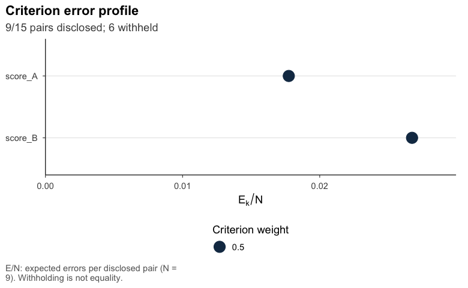
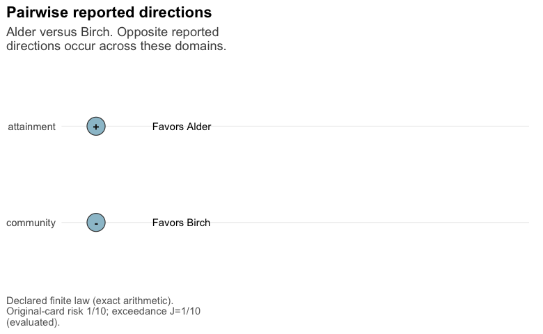

Author and maintainer: JoonHo Lee (jlee296@ua.edu).
postrank assigns integer grades to entities on the basis of posterior information for one or several criteria. Grade 1 denotes the highest priority. Different grades disclose a direction of comparison, whereas a common grade indicates that the comparison is withheld. Equality of grades therefore does not imply equality of the underlying targets.
The objective is to minimize posterior expected loss, with a penalty for an incorrect direction and a cost tau for each withheld comparison. For several criteria, specified weights combine criterion-specific losses to obtain a common grading. The posterior information is supplied to the package; model estimation is conducted separately.
Installation and computational requirements
Install postrank from GitHub:
install.packages("remotes")
remotes::install_github("joonho112/postrank")
library(postrank)The GitHub installation includes the required R dependencies. Optimization backends are installed separately.
Gurobi is the default backend. It requires Gurobi Optimizer (version 10 or later), a compatible gurobi R package and a valid license. Follow the official instructions to install Gurobi Optimizer, configure the license and install the R interface for the platform and R version in use. The R interface is supplied in the R subdirectory of the Gurobi installation.
HiGHS is an alternative backend and is used explicitly in the examples below. To install it and select it for the current R session:
install.packages("highs")
options(postrank.backend = "highs")For each optimization, an explicit backend argument takes precedence over getOption("postrank.backend"); if neither is specified, Gurobi is used. Use backend = "gurobi" or backend = "highs" to select a solver for an individual call. An unavailable selected backend stops the call; there is no silent fallback. Loading data and displaying stored results do not require an optimizer.
The three case-study inputs are adapted from public sources and retain source-specific conditions. CDE source attribution is preserved, the KRW input retains its source CC-BY-NC notice with the license version unspecified, and Alabama retains CC BY 4.0 attribution. Source details and modification notices are given in the installed extdata/case-studies/DATA-NOTICE.md.
Analysis with one criterion
pr_tutorial contains six fictional sites, A through F. The normal distributions of the scores are specified directly, with standard deviation 0.2. Sites and criteria are independent, and higher values have higher priority. The example is synthetic and does not represent empirical observations or a fitted model.
With HiGHS installed, the one-criterion analysis is obtained as follows:
one <- postrank(pr_tutorial$one, tau = .2, G_max = 3L,
backend = "highs",
control = postrank_control(time_limit = 60, threads = 1L, seed = 1304L))
oneThe displayed result is a stored analysis obtained with the explicitly selected highs backend under these settings. The weight for a single criterion is one. The grade cap specifies at most three occupied grades, allowing solutions with fewer grades.
#> <postrank_analysis> 6 entities in 3 grades (sizes 2 / 2 / 2)
#> One criterion: score_A.
#> Posterior loss: 0.0417.
#> Disclosed 12 of 15 pairs (80.0%); withheld 3.
#> Expected error among disclosed pairs: score_A 0.002.
#> Solver: Optimal within solver tolerances.
#> Optimization gap: 0; requested absolute gap 1e-08.
#> Prepared: report card.
#> Grade 1 has highest priority; a shared grade withholds the comparison.
#> grade 1 (2): A, B
#> grade 2 (2): C, D
#> grade 3 (2): E, F
#> ! 1 warning recorded: Reported lower bound exceeded the validated action r...
#> i summary(x) explains the loss, settings and bounds; get_grades(x) returns
#> all grades.The entity identifiers and grades are returned in a stable table:
as.data.frame(one)
#> entity_id grade
#> 1 A 1
#> 2 B 1
#> 3 C 2
#> 4 D 2
#> 5 E 3
#> 6 F 3The report card additionally contains marginal posterior intervals and counts of disclosed relations. The plot displays score uncertainty alongside the selected grades. The intervals refer to the scores and do not assign probabilities to grade labels.
A common grading for two criteria
The input pr_tutorial$two includes score B while retaining the distribution of score A for the same sites. Equal loss weights are specified below. These weights express a policy choice; neither the posterior distributions nor the units of the scores determine their values.
two <- postrank(pr_tutorial$two,
weights = c(score_A = .5, score_B = .5), tau = .2, G_max = 3L,
backend = "highs",
control = postrank_control(time_limit = 60, threads = 1L, seed = 1304L))
two#> <postrank_analysis> 6 entities in 3 grades (sizes 4 / 1 / 1)
#> 2 criteria: score_A, score_B.
#> Posterior loss: 0.0933.
#> Disclosed 9 of 15 pairs (60.0%); withheld 6.
#> Expected error among disclosed pairs: score_A 0.018; score_B 0.027.
#> Solver: Optimal within solver tolerances.
#> Optimization gap: 0; requested absolute gap 1e-08.
#> Prepared: report card.
#> Grade 1 has highest priority; a shared grade withholds the comparison.
#> grade 1 (4): A, B, C, D
#> grade 2 (1): E
#> grade 3 (1): F
#> i summary(x) explains the loss, settings and bounds; get_grades(x) returns
#> all grades.The resulting grades apply to both criteria. Some comparisons disclosed under score A alone are withheld under the common grading. The objective is a weighted average of criterion-specific losses, which differs from the loss for ranking an uncertain composite score.

The optimization result is characterized by the validated incumbent, normalized status, lower bound and numerical gap. The gap is the difference between the incumbent loss and its numerical lower bound, conditional on the supplied probabilities. Posterior calibration and Monte Carlo error require separate assessment.
Domain-specific report cards
The multidomain interface assigns a separate grade column to each domain. A unit can have higher reported priority in one domain and lower priority in another. It evaluates a named unit-by-domain matrix and can search an explicit, bounded set of candidate columns. It uses the suggested package gmp for arithmetic and requires no optimization backend.
This interface requires postrank 1.2.0 or later. During release-candidate review, the GitHub command above may still install the earlier public release. Install the supplied local release tarball before loading the package: install.packages("postrank_1.2.0.tar.gz", repos = NULL, type = "source").
This self-contained finite-law example has two fictional units and two domains. Each array slice is one complete joint state; its probability is specified explicitly. The declarations describe this teaching law.
if (utils::packageVersion("postrank") < "1.2.0") {
message("Multidomain example skipped: install postrank 1.2.0 or later.")
} else if (requireNamespace("gmp", quietly = TRUE)) {
ids <- c("Alder", "Birch")
domains <- c("attainment", "community")
x <- array(c(3, 2, 2, 3, 2, 3, 3, 2), c(2L, 2L, 2L),
dimnames = list(c("usual", "reversal"), ids, domains))
targets <- setNames(lapply(domains, function(d) list(
definition = paste("Fictional", d, "priority coordinate"),
units = "illustrative score", orientation = "larger_is_higher",
equality_classes = setNames(ids, ids),
equality_provenance = "No structural identity between distinct units."
)), domains)
provenance <- list(input_id = "readme-support", law_id = "readme-law",
proper_law = TRUE, producer = "Self-contained teaching example",
joint_generation = "Each slice is one complete state of both domains.",
sampling_assumptions = list(finite_support_origin =
"These two states exhaust the specified fictional law."))
input <- postrank_mdomain_input(x, targets = targets, provenance = provenance,
representation = "exact_finite_law", masses = c("9/10", "1/10"))
decision <- postrank_mdomain_decision(tau = "1/5", t = "0", alpha = "1/5")
G <- matrix(c(1, 2, 2, 1), 2L, dimnames = list(ids, domains))
card <- postrank_mdomain_evaluate(input, G, decision)
print(postrank_mdomain_grades(card))
print(postrank_plot_mdomain(card, view = "pair", units = ids))
} else {
message("Multidomain example skipped: install the optional package 'gmp'.")
}
#> attainment community
#> Alder 1 2
#> Birch 2 1
Alder and Birch have crossing profiles. A grade tie withholds direction; it does not assert equality of their targets. Exact strings such as "1/5" retain their rational value, while numeric policies retain their stored binary value. Evaluation of draws describes their empirical measure; assessment of an intended posterior requires a separate sampling design. The installed vignette("mdomain-quickstart", package = "postrank") shows joint draws, candidate search, three plot views and input repairs. It is also available offline as vignette("mdomain-quickstart", package = "postrank").
Posterior inputs
Supported inputs include joint or criterion-wise draws, complete exact finite laws, conditional Gaussian laws, shared-state Gaussian mixtures and previously calculated tie-free comparison probabilities. The corresponding constructors depend on the form of the available posterior information:
| Available posterior information | Constructor |
|---|---|
Draw arrays, matrix lists or posterior draws |
postrank_draws() and postrank_declarations()
|
| Conditional Gaussian or shared-state mixture law |
postrank_gaussian_coefficients() or postrank_mixture_coefficients()
|
| Previously calculated pairwise probabilities | postrank_probabilities() |
| Genuine equality with a declared joint law | The separate postrank_tie_* API |
Each input requires target definitions, directions, conditioning information and provenance. Validation assesses structure and consistency with these declarations; their scientific validity remains an assumption of the analysis. Comparison probabilities alone do not identify a draw history or marginal summaries; structural validation does not provide an error certificate. The available native modes depend on the input, as documented in ?postrank_problem and ?postrank_tie_capabilities.
For genuine equality, the separate tie-aware loss charges strict reversals and withholding of distinct targets. Its all-withhold benchmark is R0, which may be below tau. Ordinary constructors retain their tie-free loss.
Result extraction and graphical summaries
as.data.frame(two, what = "report_card")
get_profile(two)
get_relations(two)
postrank_report(two$fit, analysis = two) # stored results only
postrank_plot_pairwise(two) # prepared comparison probabilities
postrank_plot_relations(two) # disclosed and withheld relations
format(two, width = 72, tier = 2) # reusable console textSeven plotting functions cover report cards, relations, criterion profiles, method comparisons, pairwise probabilities, tau frontiers and commonality costs. Frontier, sensitivity and commonality calculations run new optimizations when explicitly requested. Changing the withholding cost or criterion weights changes the loss under which risk is evaluated.
The installed documentation is organized into Applied and Methods series:
-
Applied:
a1-getting-started, the CDE, KRW and Alabama cases,a5-your-posterior-results,a6-reading-exporting-resultsanda7-figures-sensitivity. -
Methods:
m1-ranking-and-loss,m2-several-criteria,m3-posterior-inputs,m4-ties-and-withholding,m5-computing-gradesandm6-uncertainty-diagnostics.
The introductory article is available through vignette("a1-getting-started", package = "postrank"), and the complete index through vignette(package = "postrank"). A migration guide and figure gallery supplement these articles. Three additional articles cover the earlier workflow, posterior inputs and comparisons with fixed-order baselines.
Citation
citation("postrank") provides the following references for the package, its theory book and the report-card method:
R package. Lee, J. (2026). postrank: Posterior Ranking with Integer Grades. R package version 1.2.0. GitHub repository · Package documentation.
Theory book. Lee, J. (2026). Decisions from noisy multidimensional indicators: Theory, evidence, and posterior grading (Version 1.0.0). Zenodo. https://doi.org/10.5281/zenodo.23790260. Read online.
Report-card method. Kline, P., Rose, E. K., and Walters, C. R. (2024). A discrimination report card. American Economic Review, 114(8), 2472–2525. https://doi.org/10.1257/aer.20230700.
Acknowledgments
The research underlying this package was supported primarily by the National Academy of Education and the Spencer Foundation through the 2025 National Academy of Education/Spencer Postdoctoral Fellowship.
The research reported here was supported by the Institute of Education Sciences, U.S. Department of Education, through Grant R305D240078 to The University of Alabama. The opinions expressed are those of the authors and do not represent views of the Institute or the U.S. Department of Education.